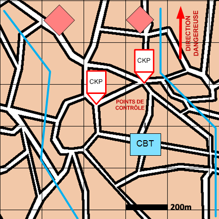

NIVEAU : Automate
ARME : Melee
MISSION : Animer Postes De Controle
NIVEAU : Automate
ARME : Melee
MISSION : Animer Postes De Controle
Schéma de modélisationAnimer Postes De Contrôle |
Paramètres obligatoiresFuseauZone de responsabilité. Direction Dangereuse Orientation privilégiée des capteurs. Positions de contrôle Positions ou le SGTIA va construire et animer les points de contrôle. Niveau de contrôle Représente le niveau de fouille (et le temps de fouille) des individus au passage du poste de contrôle (0 : contrôle sommaire, 100 : fouille complète). |
|
Paramètres optionnels |
||
 |
Fiches missions |  |